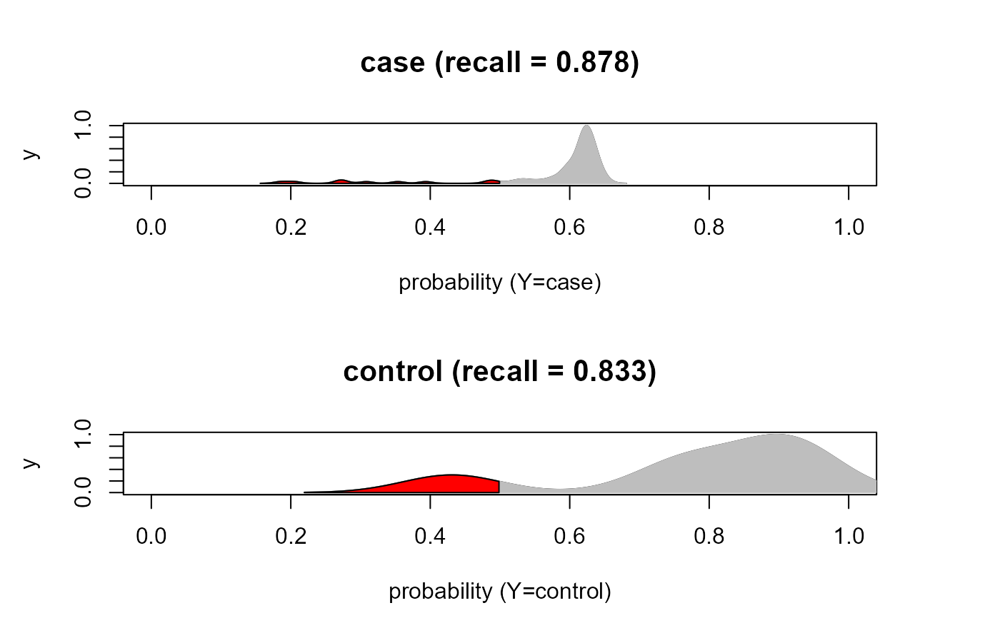

Predict method for DNN objects.
# S3 method for class 'DNN'
predict(object, newdata, newoutcome = NULL, verbose = FALSE, ...)A model fitting object from SEMdnn() function.
A matrix containing new data with rows corresponding to subjects, and columns to variables. If newdata = NULL, the train data are used.
A new character vector (as.factor) of labels for a categorical output (target) (default = NULL).
Print predicted out-of-sample MSE values (default = FALSE).
Currently ignored.
A list of three objects:
"PE", vector of the amse = average MSE over all (sink and mediators) graph nodes; r2 = 1 - amse; and srmr= Standardized Root Means Square Residual between the out-of-bag correlation matrix and the model correlation matrix.
"mse", vector of the Mean Squared Error (MSE) for each out-of-bag prediction of the sink and mediators graph nodes.
"Yhat", the matrix of continuous predicted values of graph nodes (excluding source nodes) based on out-of-bag samples.
# \donttest{
if (torch::torch_is_installed()){
# Load Amyotrophic Lateral Sclerosis (ALS)
ig<- alsData$graph
data<- alsData$exprs
data<- transformData(data)$data
group<- alsData$group
#...with train-test (0.5-0.5) samples
set.seed(123)
train<- sample(1:nrow(data), 0.5*nrow(data))
#ncores<- parallel::detectCores(logical = FALSE)
start<- Sys.time()
dnn0 <- SEMdnn(ig, data[train, ], algo ="layerwise",
hidden = c(10,10,10), link = "selu", bias = TRUE,
epochs = 32, patience = 10, verbose = TRUE)
end<- Sys.time()
print(end-start)
pred.dnn <- predict(dnn0, data[-train, ], verbose=TRUE)
# SEMrun vs. SEMdnn MSE comparison
sem0 <- SEMrun(ig, data[train, ], algo="ricf", n_rep=0)
pred.sem <- predict(sem0, data[-train,], verbose=TRUE)
#...with a categorical (as.factor) outcome
outcome <- factor(ifelse(group == 0, "control", "case")); table(outcome)
start<- Sys.time()
dnn1 <- SEMdnn(ig, data[train, ], outcome[train], algo ="layerwise",
hidden = c(10,10,10), link = "selu", bias = TRUE,
epochs = 32, patience = 10, verbose = TRUE)
end<- Sys.time()
print(end-start)
pred <- predict(dnn1, data[-train, ], outcome[-train], verbose=TRUE)
yhat <- pred$Yhat[ ,levels(outcome)]; head(yhat)
yobs <- outcome[-train]; head(yobs)
classificationReport(yobs, yhat, verbose=TRUE)$stats
}
#> Conducting the nonparanormal transformation via shrunkun ECDF...done.
#> Running SEM model via DNN...
#>
#> layer 1 : z10452 z84134 z836 z4747 z4741 z4744 z79139 z5530 z5532 z5533 ...
#> train val base
#> 0.3984385 Inf 0.9875000
#>
#> layer 2 : z842 z1432 z5600 z5603 z6300
#> train val base
#> 0.4923161 Inf 0.9875000
#>
#> layer 3 : z54205 z5606 z5608
#> train val base
#> 0.5227619 Inf 0.9875000
#>
#> layer 4 : z596 z4217
#> train val base
#> 0.8855673 Inf 0.9875001
#>
#> layer 5 : z1616
#> train val base
#> 0.8752371 Inf 0.9875001
#> done.
#>
#> DNN solver ended normally after 160 iterations
#>
#> logL:-41.335458 srmr:0.168144
#> Time difference of 5.756147 secs
#> amse r2 srmr
#> 0.7330556 0.2669444 0.2201905
#> RICF solver ended normally after 2 iterations
#>
#> deviance/df: 6.262846 srmr: 0.3040025
#>
#> amse r2 srmr
#> 0.8571886 0.1428114 0.2948502
#> Running SEM model via DNN...
#>
#> layer 1 : zcase zcontrol
#> train val base
#> 0.002080599 Inf 0.987500012
#>
#> layer 2 : z10452 z84134 z836 z4747 z4741 z4744 z79139 z5530 z5532 z5533 ...
#> train val base
#> 0.3879341 Inf 0.9875000
#>
#> layer 3 : z842 z1432 z5600 z5603 z6300
#> train val base
#> 0.4821737 Inf 0.9875000
#>
#> layer 4 : z54205 z5606 z5608
#> train val base
#> 0.4859893 Inf 0.9875000
#>
#> layer 5 : z596 z4217
#> train val base
#> 0.8668677 Inf 0.9875001
#>
#> layer 6 : z1616
#> train val base
#> 0.8606882 Inf 0.9875001
#> done.
#>
#> DNN solver ended normally after 192 iterations
#>
#> logL:-38.558267 srmr:0.170705
#> Time difference of 7.35903 secs
#> amse r2 srmr
#> 0.6762952 0.3237048 0.2273915
#> pred
#> yobs case control
#> case 65 9
#> control 1 5
#>

#> precision recall f1 accuracy mcc support
#> case 0.9848485 0.8783784 0.9285714 0.875 0.4933551 74
#> control 0.3571429 0.8333333 0.5000000 0.875 0.4933551 6
#> macro avg 0.6709957 0.8558559 0.7142857 0.875 0.4933551 80
#> weighted avg 0.9377706 0.8750000 0.8964286 0.875 0.4933551 80
#> support_prop
#> case 0.925
#> control 0.075
#> macro avg 1.000
#> weighted avg 1.000
# }